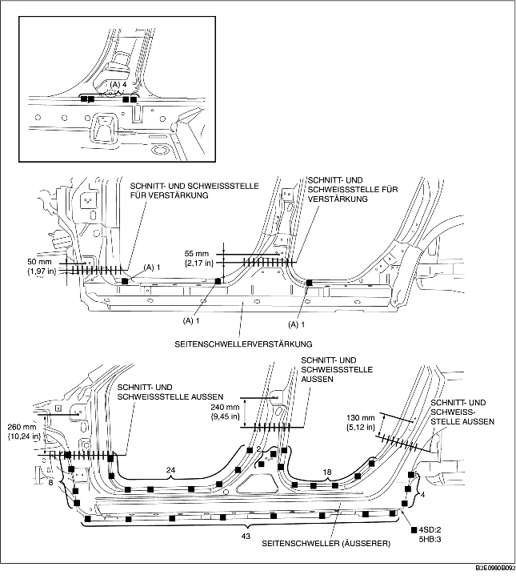

1. Beim Zusammenfügen und Vorschneiden neuer und vorhandener Teile, zuerst das neue Teile probeweise einpassen und danach das Chassis entsprechend der Standardabmessungen messen und einstellen.
2. Vor dem Einbau neuer Teile Löcher für das Lochschweißen aufbohren.
3. Die 7 mit (A) gekennzeichneten Schweißstellen schweißen und die Seitenschwellerverstärkung vorübergehend einbauen.
4. Nach der provisorischen Befestigung der neuen Teile sicherstellen, dass die zugehörigen Teile richtig passen.
